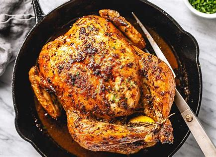

Juicy Roast Chicken

Description
This recipe will yield the juicest, most succelent roast Chicken
you'll ever have. The secret is the brine, while time consuming,
injects tons of flavor into the chicken. Your love ones will be
impressed and extremley satisfied, and you'll be on permanent
chicken duty for the cookout.
Ingredients
For Brine
- 2 quarts cold tap water
- 1 lemon, quartered
- 1 orange, quartered
- 1/3 cup kosher or cooking salt (NOT table salt!!!)
- Fresh parsely
- Fresh Rosemary
- Fresh Thyme
- 3 dried bay leaves
- 1/4 cup honey or raw sugar
- 8 garlic cloves, smashed
For Roast Chicken
- 1 4-5 pound whole chicken (preferably organic free range)
- 4 tbsp softened butter
- 1 tbsp whole peppercorns
- 2 tsp paprika
- 1 tsp cumin
- 1 tsp ground black pepper
- All purpose chicken seasoning
- 1 tsp italian seasoning (or Suya seasoning if you have
access to a west african goods store).
Steps
- Pour 1/3 of the water into a large stock pot with brine
ingredients. Bring to a boil for 1 minute and dissolve salt.
- Remove pot from heat and add in remaining water. Cool
completely
- Flip chicken upside down and submerge in brine solution.
Cover and refrigerate for at least 12 hours (and up to 24
hours).
- Remove chicken from brine and pat dry to remove excess
moisture
- Mix softened butter with spice, and rub mixture all over
chicken, making sure to get underneath the skin.
- Stuff chicken with quartered lemon and onion, and tie legs
together with string or butchers twine.
- Preheat oven to 450 F
- Put chicken on roasting pan and place in oven. Bake at
temperature for 15 min, then turn down to 350 and continue
roasting chicken for at least 1 hour - 1 hour and 20 min,
or until internal temperature of breast reaches 165 F and
internal temperatue of leg and thighs reach 185 F.
- Remove chicken from oven, cover with foil and let rest for
15-20 min
- Slice and serve with your favorite sides!